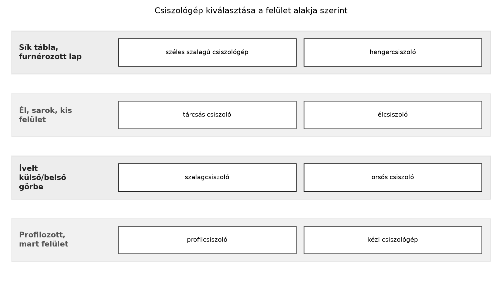

Egy asztalosműhelyben bükk furnérral borított asztallapokat készítenek. A lap felülete a préselés után még egyenetlen, a furnér illesztéseinél apró ragasztófelesleg és enyhe lépcsők látszanak. A kézi csiszolás itt már lassú, fárasztó, és a felület könnyen hullámos lesz. A megrendelő magasfényű lakkozást kért, ami minden hibát felnagyít. A mester ezért gépi csiszolást választ: a furnérozott lapot széles szalagú csiszológépen készíti elő, a széleket tárcsás vagy élcsiszoló gépen dolgozza el, az ívelt díszlécet pedig szalagos csiszológéppel finomítja. Ebben az alfejezetben ezeket a gépeket, működésüket, a helyes technológiát és a jellemző hibákat tanulod meg.
Képzeld el a műhelyt: balra egy nagy, zárt szekrényű gép áll, amelybe elöl betolsz egy 1200 mm széles bútorlapot. A gép belsejében széles csiszolószalag fut, alatta szállítószalag viszi a lapot. A gép hátulján elszívó cső, a kezelő oldalán egy vészleállító gomb és egy sebességkapcsoló látható. Jobbra egy állványos tárcsás csiszoló: a függőleges csiszolótárcsa mellett kis asztal, amelyen a munkadarabot vezeted. A fal mellett kézi szalagcsiszoló gép lóg egy elszívócsővel. A polcon különböző grádusú csiszolószalagok vannak címkézve: P80, P120, P150, P180. Ez a gépi csiszolás három alappillére: megfelelő gép, megfelelő szemcsefinomság és megfelelő előtolás.
Definíció. A faipari csiszológép olyan forgácsoló gép, amely a munkadarab felületét csiszolószemcsékkel bevont szerszámmal – csiszolószalaggal, csiszolótárcsával vagy csiszolóhengerrel – nagyon finom forgácsok leválasztásával munkálja meg. A csiszológépek nem méretre munkáló gépek elsődlegesen, hanem felületminőség-javító és kalibráló gépek: eltávolítják a gyalulás, marás vagy préselés apró egyenetlenségeit, és előkészítik a felületet pácoláshoz, lakkozáshoz, olajozáshoz.
Csoportosítás a szerszám alakja szerint:
Szabály. Gépi csiszolásnál a csiszolószemcse a forgácsoló él. A csiszolási folyamatot a szalagsebesség, az előtoló sebesség, a csiszolási nyomás, a szemcsenagyság (grádus) és a szerszám állapota együtt határozza meg. A túl nagy nyomás vagy túl lassú előtolás túlmelegedést, égést és átcsiszolást okoz; a túl kicsi nyomás csak simít, de nem távolítja el az előző megmunkálás nyomait.
A szalagcsiszológép egy fém- vagy öntöttvas állványból, hajtótárcsából, futótárcsából és a kettőre feszített végtelenített csiszolószalagból áll. A munkadarabot a szabad szalagszakaszon, egy állítható asztalon vagy munkaasztalon vezetik. A szalag futásirányát a tárcsák enyhe döntésével (szalagfutás-állítás) tartják középen. A gép lehet:
Technológiai jellemzők: A szalagcsiszoló elsősorban sík és enyhén ívelt felületek csiszolására való. A csiszolószalag szemcsegrádusa a feladat szerint P80–P320 között változhat. Az előtolást a kezelő adja, ezért az egyenletes felületért folyamatos, azonos sebességű mozgatás szükséges. A gépen cserélhető a csiszolószalag; a szalag feszítését a gyártói értékre kell állítani (nem túl feszes, mert szakadhat, nem túl laza, mert csúszik).
Számítás. Egy szalagcsiszológép hajtótárcsája , fordulatszáma . Mennyi a csiszolószalag kerületi sebessége?
Ellenőrzés: a faipari szalagcsiszolók jellemző sebessége 10–30 m/s tartományba esik; a kapott érték reális (a pontos értéket a gépkönyv és a szerszámgyártó adatlapja szerint ellenőrizni kell). A csiszolószalag megengedett sebességét (a szalag címkéjén) a gép kerületi sebessége nem lépheti túl.
A hengercsiszológép egy vízszintes vagy függőleges tengelyű henger, amelyre csiszolószalagot vagy csiszolópapírt rögzítenek. A munkadarabot a henger alatt (vagy fölött) gépi vagy kézi előtolással vezetik. A leggyakoribb a vastagsági csiszolóhenger, amely a felület vastagsági egyengetését is elvégzi: a henger és az adagolóasztal közötti beállított magasság határozza meg az anyagleválasztást.
A kontaktcsiszolás azt jelenti, hogy a csiszolószalagot egy merev, hajlított vagy rugalmas kontaktelem – gyakran kontakthenger vagy csiszolópapucs – nyomja a munkadarabhoz. A kontaktcsiszolás a széles szalagú gépeknél is megjelenik:
A kontakt- és hengercsiszológépek a kalibrálásra is szolgálnak: például ragasztott tábláknál, furnérozott lapoknál az egyenletes vastagság elérése.
A széles szalagú csiszológép a faipar legfontosabb gépi csiszolója. Jellemzői:
Az ábrán látszik a két csiszolóegység különbsége: a kontakthenger keskeny sávon, nagy fajlagos nyomással érintkezik (erős anyagleválasztás, kalibrálás), a csiszolópapucs széles sávon, kis nyomással (finomcsiszolás). A HTML-kiadásban a gép részeire mutatva megjelenik a nevük és szerepük, a csúszkákkal pedig a menetidő () számolható.
A széles szalagú gép három alapfunkciója:
Fontos technológiai szabály: Furnérozott lapoknál a csiszolási leválasztás legfeljebb néhány tizedmilliméter lehet, mert a furnér vastagsága jellemzően 0,5–1,5 mm. A csiszolást tehát finom szemcsével, gyors előtolással, kis nyomással végezd. A furnér átcsiszolása visszafordíthatatlan hiba.
A tárcsás csiszológép egy függőleges vagy vízszintes tengelyű tárcsára rögzített csiszolókorongból és egy állítható munkaasztalból áll. A munkadarabot kézzel nyomjuk a tárcsához. A tárcsa fordulatszáma hajtja a csiszolókorongot, amelynek kerületi sebessége a tárcsa sugarával nő.
Előnye: gyors, egyszerű gép élek, sarkok, ívelt külső felületek és kisebb alkatrészek csiszolására. A tárcsás gép különösen alkalmas:
Hátránya: a tárcsa kerületi sebessége a középponttól kifelé nő. A munkadarabot a tárcsa lefelé forgó felén vezesd, mert ott a forgás a darabot az asztalra nyomja; a felfelé forgó oldalon felrántaná. A tárcsa közepén a sebesség kicsi, ott nem csiszolunk.
Gépbiztonság. A tárcsás csiszológép védőburkolata a korong hátsó és felső részét fedje; az elszívó csonk működjön. Forgó korongnál kesztyűt viselni tilos. A munkadarabot ne nyomd a koronghoz erőből, mert behúzhatja vagy visszavághatja. A csiszolókorongot a gyártó által megadott fordulatszámon használd; repedt, szakadt vagy eltömődött korongot cserélj.
Élcsiszoló gép keskeny, lassabban futó csiszolószalaggal dolgozik; a munkadarabot egy asztalon vezetik, vagy a szerszámot közelítik az alkatrész éléhez. Különösen alkalmas:
Orsós csiszológép (oszcilláló orsós csiszoló): függőleges, kis átmérőjű, lengő mozgást végző csiszolóorsója van. Belső ívek, zárt görbék, lyukak csiszolására használják. Az orsó lengése megakadályozza a szemcse eltömődését és a túlmelegedést. Ez a gép a különleges csiszológépek közé tartozik, mert elsősorban sablonos, íves alkatrészek belső felületeit munkálja meg.
Profilcsiszoló gép vagy állványos élcsiszoló a mart profilok, díszlécek, keretlécek felületét csiszolja, gyakran a profilformának megfelelően kialakított csiszolószerszámmal.
A gépi csiszolás eredményét négy beállítás határozza meg:
Összefüggés. A csiszolószalag kerületi sebessége:
ahol a hajtótárcsa (vagy henger) átmérője mm-ben, a fordulatszáma 1/min-ben, a kerületi sebesség m/s-ban.
A gépi előtolású gépnél a teljesítményt az előtoló sebesség (m/min) és a munkadarab hossza (m) határozza meg. Egy menet időtartama:
Ez az összefüggés a gyártási idő becsléséhez és a gép kapacitásának tervezéséhez kell.
Számítás. Egy 2,5 m hosszú tölgy asztallap három csiszolási menetben halad át a széles szalagú gépen: P120, P150, P180 grádussal. Az előtoló sebesség minden menetben . Mennyi az összes csiszolási idő, ha az adagolási és megfordulási időt 0,2 perc/menetre becsüljük?
Egy menet tiszta csiszolási ideje:
Három menet: . Az adagolási idő . Az összes idő:
Ez gépi sorozatgyártásban nagyon gyors; kézi csiszolással ugyanez több óra lehetne.
Gépbiztonság. A gépi csiszolást csak betanított, felügyelt tanuló végezheti, a gépkönyv szerint. Védőberendezés nélkül, egyedül, fáradtan soha ne dolgozz. A csiszológépek fő veszélyei:
Kötelező védőberendezések és egyéni védőeszközök:
Termék/alkatrész: furnérozott bútorlap (méret 1000 × 600 mm, bükk furnér, MDF hordozó) előkészítése lakkozás alá.
Anyagok: P150, P180 (szükség esetén P220) szemcsefinomságú széles csiszolószalag; csiszolószalag-tisztító (gumibetét); tiszta szűrőbetét a légzésvédőhöz.
Gépek és szerszámok: széles szalagú csiszológép (legalább 600 mm hasznos szélesség), elszívóberendezés, gépkönyv, tolólap, védőszemüveg, hallásvédő, légzésvédő.
Gépbiztonság. A művelet betanított, felügyelt tanulónak szól; védőberendezés nélkül, egyedül, fáradtan ne végezd. A gépen a csiszolószalagok védőburkolata, a szállítószalag, a vészleállító és az elszívás rendeltetésszerű állapotú legyen.
Indítás előtti ellenőrzés: 1. A gép feszültségmentes állapotban legyen; az előtolás és a csiszolóegységek burkolatát ellenőrizd. 2. A csiszolószalag feszítése, futása és a grádusfelirat ellenőrzése. 3. Az elszívócső csatlakoztatása és az elszívó indítása. 4. A munkadarabon nincs szeg, laza göcs, ragasztócsomó. 5. A vészleállító elérhető, a munkaterület szabad.
Számozott lépések:
Dokumentálás: a munkanaplóban rögzítsd a tételt, a grádusokat, az előtoló sebességet és a menetek számát.
A gépi csiszolás után a felületet szemrevételezéssel, tapintással és szükség esetén vastagságméréssel ellenőrizzük.
Ha a felület eltérést mutat, a hibát meg kell keresni a szalag állapotában, a gép beállításában vagy az előtolásban, és a javítás után újra kell csiszolni.
1. Hiba: átcsiszolt furnér – a hordozó anyag áttűnik a furnéron. Oka: túl durva szemcse, túl nagy csiszolási nyomás, túl lassú előtolás, több menet a szükségesnél. Javítás: az alkatrészt újra furnérozni kell, vagy ha kis felületen történt, javítófurnér betéttel és gondos lakkozással takarni. Megelőzés: finom szemcse (P150 vagy finomabb), kis nyomás, gyors előtolás, a leválasztás ellenőrzése.
2. Hiba: hullámos felület, „nyomvályúk”. Oka: egyenetlen adagolás, elhasznált vagy eltömődött csiszolószalag, rossz szalagfeszítés, nem megfelelően beállított szalagfutás. Javítás: cseréld a csiszolószalagot, tisztítsd meg, állítsd vissza a futást, majd egyenletes előtolással csiszold újra a felületet.
3. Hiba: égésnyomok, sötét, fényes foltok. Oka: eltömődött szalag, túl nagy nyomás, túl nagy szalagsebesség vagy túl lassú előtolás (megállt munkadarab a szalag alatt). Javítás: az égett réteget finom szemcsével, enyhe nyomással távolítsd el; szükség esetén cseréld vagy tisztítsd a szalagot, csökkentsd a nyomást, és növeld (vagy tartsd egyenletesen) az előtolást; a munkadarab ne álljon meg a szalag alatt. Megelőzés: a csiszolószalagot rendszeresen tisztítsd, ne engedd, hogy a munkadarab egy helyben maradjon.
4. Hiba: a szélek lekerekítettek, a lap közepén megmaradt a nyers felület. Oka: helytelen kézi vezetés, túl nagy nyomás a széleken, a gépi előtolásnál a szállítószalag kopott vagy nem sík. Javítás: ellenőrizd a szállítószalagot, használj egyenletes nyomást a teljes felületen, szükség esetén szélesebb csiszolószalagot vagy másik gépet.
Tünet: egy bükkfurnéros MDF lap felületén, a lakkozás előtti utolsó csiszolás után, foltos, fényes, tömörödött foltok jelentek meg. A darabot a mester azzal a panasszal kapja vissza, hogy a lakk nem terjed egyenletesen, és „foltos” a felület.
Lehetséges okok: - a csiszolószalag eltömődött, ezért a szemcsék nem vágnak, hanem súrolnak; - a gépi csiszolásnál a csiszolóegység nyomása túl nagy volt, a felület „bezsírosodott”; - a munkadarab előtolása nem volt egyenletes.
Vizsgálat: A gépet leállítják, áramtalanítják, majd a szalagot cserélik, és egy próbadarabot csiszolnak P150-es szalaggal, 10 m/min előtolással. A próbadarab felülete egyenletes lesz, a foltok eltűnnek. A korábbi szalagon látható, hogy a szemcsék közötti hézagok feltöltődtek finom porral.
Valódi ok: Az eltömődött szalag miatt a csiszolószemcse nem forgácsolt, hanem dörzsölte a felületet. A súrlódási hőtől a fafelület egyes pontokon tömörödött, eltömítette a pórusokat, ezért a lakk később nem tudott egyenletesen beszívódni.
Javítás és megelőzés: A tömörödött réteget éles P180-as szalaggal, kis nyomással, egyenletes előtolással eltávolították; a lakk egyenletes felvételét próbadarabon előbb ellenőrizték. A megelőzés: a csiszolószalagot rendszeresen tisztítani kell, a leválasztást próbadarabon ellenőrizni, és az elszívást mindig üzemeltetni.
Egy kis bútorműhelyben a tulajdonos azt tapasztalta, hogy a tömör bükk asztallapok csiszolása kézi géppel sok időt vesz igénybe, és a felület minősége nem egyenletes. A megrendelők egyre többször kértek pácolt, olajozott felületet, amihez a felületnek hibátlannak kell lennie. A műhely ezért bérmunkában egy széles szalagú csiszológépen csiszoltatta a lapokat.
Az első szállítmánynál a lapok szélei le voltak csiszolva, de a közepükön megmaradtak a gyalulási nyomok. A hiba vizsgálatakor kiderült, hogy a bérmunkát végző gép szállítószalagja kopott volt, ezért a lap közepén a szalag nem feküdt fel rendesen a csiszolóhengerre. A szalag cseréje és a gép kalibrálása után a felület egyenletes lett. A műhely ezután minden bérmunka előtt próbadarabot kért, és rendszeresen ellenőrizte a vastagságot és a felületminőséget.
A következő ábra négy felülettípushoz rendeli a hozzá illő csiszológépeket. A négy sor egymás melletti választási lehetőség, nem egymás utáni műveletsor:

Az ábra rögzíti, hogy nincs egyetlen univerzális csiszológép: a felület alakja, a hozzáférhetőség és a megmunkálási irány határozza meg a gépet.
1. feladat (A) Sorold fel a faipari csiszológépek három fő típusát a szerszám alakja szerint, és mindegyikhez adj egy példát a felhasználásra.
2. feladat (A) Egy tárcsás csiszológép tárcsaátmérője 250 mm, fordulatszáma 1400 1/min. Számítsd ki a tárcsa kerületi sebességét m/s-ban a legnagyobb átmérőn.
3. feladat (B) Egy széles szalagú gépen egy 3 m hosszú furnérozott lapot csiszolsz. Az előtoló sebesség 10 m/min. A menetek száma 3 (P120, P150, P180), az adagolási idő menetenként 0,3 perc. Mennyi az összes csiszolási idő?
4. feladat (B) Ismertesse a széles szalagú csiszológép kétféle csiszolóegységét: a kontakthengerest és a csiszolópapucsost. Melyiket használnád furnérozott lap finomcsiszolására, és miért?
5. feladat (C) A műhelyben egy 1200 mm széles bükk tömörfa asztallap felülete a kézi gyalulás után még egyenetlen. Az asztallap vastagsága 28 mm, a cél felület lakkozás alá való. Javasolj gépet és csiszolási sorrendet (grádusok), és indokold a választást a csiszolási elvek alapján.
6. feladat (D) Készíts technológiai lépéssort egy élcsiszoló géphez: a feladat egy ívelt oldalú, furnérozott MDF lap élének letörése és csiszolása lakkozás előtt. Add meg a beállításokat, a védőeszközöket és az ellenőrzési pontokat.
Önellenőrzés – válaszok
1. feladat (A) A három fő típus: szalagcsiszológép (pl. sík felületek, enyhe ívek), tárcsás csiszológép (élek, sarkok), henger- vagy széles szalagú csiszológép (táblásított lapok).
2. feladat (A)
3. feladat (B) Egy menet ideje: . Három menet csiszolási ideje: . Adagolási idő: . Összes: .
4. feladat (B) A kontakthengeres egység egy merev hengerrel nyomja a csiszolószalagot a felületre, így erősebb anyagleválasztás érhető el; kalibrálásra, tömörfa előcsiszolásra alkalmas. A csiszolópapucsos egység sík, rugalmas nyomóelemet alkalmaz, így a felület finomabb, egyenletesebb lesz; furnérozott lapok finomcsiszolására való, mert kisebb a helyi nyomás és a leválasztás. Furnérozott lap finomcsiszolásához csiszolópapucsos egységet használsz.
5. feladat (C) A 1200 mm széles bükk asztallaphoz széles szalagú csiszológép alkalmas, mert a teljes szélességet átfogja. Csiszolási sorrend: P100 vagy P120 durva előcsiszolás a gyalulási nyomok eltávolítására, majd P150 közepes, végül P180 finom szemcse a lakkozás alá. Az előtolást közepes értéken (8–12 m/min) tartjuk; a nyomást fokozatosan csökkentjük a finomabb meneteknél. Indoklás: a csiszolási sort fokozatosan finomítjuk, a durvább szemcse karcolását a következő finomabb szemcse teljesen eltünteti; a túl durva ugrás hibás felületet ad.
6. feladat (D) Technológiai lépéssor élcsiszoló géphez: 1. Ellenőrizd az élcsiszoló szalag állapotát, a védőburkolatot és az elszívást. 2. Állítsd be a szalag futását, a szalag sebességét a gépkönyv szerint (jellemzően 8–15 m/s, ellenőrizendő). 3. Válaszd ki a csiszolószalagot: P150-es grádust a letöréshez, majd P220-ast a simításhoz. 4. Helyezd az ívelt lapot az asztalra, és a gép bekapcsolása után folyamatosan vezesd végig az élet a szalag mentén, a munkadarabot enyhe, egyenletes nyomással tartva. – ellenőrzés: az él egyenletesen csiszolt, nincs kiugró sarok. 5. Ellenőrizd a letörés szélességét (tájékoztató érték: 0,5–1 mm) és a felület simaságát tapintással. 6. Kapcsold ki a gépet, várd meg a szalag megállását, majd takaríts. Védőeszközök: védőszemüveg, hallásvédő, légzésvédő, szoros munkaruha. Tilos kesztyű.
A faipari csiszológépek a csiszolószemcsékkel bevont szerszámmal finom forgácsolást végeznek, és a felületet előkészítik a felületkezelésre. A gépeket a szerszám alakja szerint szalag-, tárcsás, henger- és széles szalagú csoportba soroljuk; ezeken kívül élcsiszoló, orsós és profilcsiszoló gépeket használunk. A szalagcsiszológép kézi előtolással sík és ívelt felületet csiszol; a henger- és széles szalagú gép gépi előtolással kalibrál és simít; a tárcsás és élcsiszoló gépek az éleket, sarkokat munkálják meg. A csiszolási sebességet a képlet adja; a gépi előtolású menetidő . A legfontosabb technológiai szabály: a csiszolási sort fokozatosan finomítsd (például P120 → P150 → P180), furnérozott lapnál finom szemcsét, kis nyomást és gyors előtolást használj, hogy a furnért ne csiszold át. A gépi csiszolás biztonsága a védőburkolaton, az elszíváson, a megfelelő védőeszközökön és a tiltott kesztyűviselésen alapul. A jellemző hibák – átcsiszolás, hullámosság, égés, szélek lekerekítése – mind a szerszám, a beállítás vagy az előtolás hibájára vezethetők vissza. Továbbvitt eredmény. A gépi csiszolás itt tanult elvei a furnérozott lapok, az élzárás és a felületkezelés előkészítése során hasznosulnak, különösen a Lapszerkezetű termékek teljes gyártási folyamata és az Élzárás felületborítás után, éllezáró gépek és élmegmunkálás alfejezetekben.
Felhasznált forrástípusok: a Csiszolóanyagok és a kézi csiszolás és a Faipari gépek biztonságtechnikája: veszélyek és védőberendezések alfejezetek, csiszológépek gépkönyvei, csiszolóanyag-gyártói műszaki adatlapok, MSZ EN ISO 6344 (csiszolóanyagok jelölése, ellenőrizendő), MSZ EN ISO 19085 sorozat (faipari gépek biztonsága, ellenőrizendő), a munkahelyi por- és zajexpozíció jogszabályai (ellenőrizendő). A megadott sebesség-, grádus- és előtolási értékek, tűrések és a gépfelépítési leírások tájékoztató jellegűek; a konkrét gépen a gépkönyv, a szerszámgyártó engedélye és a vonatkozó biztonsági szabvány az irányadó. Az árajánlati, bérmunka- és időadatok mintaadatok, nem valós piaci költségek.